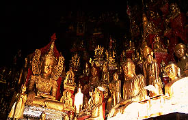

ShweOoMinCave(PindayaCave)/PINDAYA
ピンダヤ洞窟
鍾乳洞の中に8094体もの仏像が納められていると言われるピンダヤの洞窟である。へーホー空港から2時間。ピンダヤの街に着いた頃には日も暮れて真っ暗になっていた。小さな湖の畔にある薄暗い街の先の山の中腹になにやらひときわ派手な電飾が施されている。
ピンダヤの街よりも大規模で派手な電飾はまるでミニ熱海温泉といった風情であった。
それがピンダヤ洞窟を含めたパゴダ群であったのが判明したのは、翌朝明るくなってから。
ピンダヤ洞窟はこの一連のパゴダ群の一番左側。夕べひときわ派手な灯を発していたのがここのエレベーターであった。
何件かの土産物をすぎるといよいよピンダヤ洞窟の入口である。
眼下には白亜のパゴダ群。
この洞窟の起源である蜘蛛退治伝説にあやかってステキなオブジェ。
その他、岩の隙間や天井に楽し気な雰囲気が満ちており油断ならない。
エレベーターが営業時間外だったので階段を登って洞窟の入口へ。入口を覆うように建物が建っておりそこで入場料を払う。で、内部へ。

おおお〜おりますおります！いきなり何段にも積み重ねられた仏像ピラミッドの登場である。
洞内は広いホール状になっており高さは10数メートルといったところか。
その天井に届かんばかりに大小様々な仏像がみっしりとおわす。
薄暗い洞窟の中に渦高く積み上げられた赤い台座と金の仏像。もんのすごくシュールである。
さらに3メートル位の金の仏塔などもあり、ゴージャスだ。
先に進むとさらに大きなホールのようなところに出る。そこにはさらに大量の仏像が隙間なくひしめいているではないか！見渡す限り仏仏仏・・・
こちらのは金ではなく、白、黒といったシンプルな色使い。それだけにひっそりとした洞窟の雰囲気が損なわれずに・・・でも超過密。
見れば「MAZE」の表記が。嬉しいねえ。珍寺好きのツボが分かってるねえ。仏像迷路だって。
さっそくひと迷いしてみますか。
迷路は以外と単純な、というか何カ所か行き止まりがあるだけのものなのだが、その行き止まりと言うのがいきなり仏像に囲まれるので一寸怖い。なかをふらふらと歩いている内にホールを一回りしてしまった。
そこから先は比較的普通の鍾乳洞のようなところに仏像が点在するという状態なっていく。
そちらは仏密集状態と言う訳では無いので、割愛。通路はタイル敷で清潔だった事だけ付け加えておこう。
で、洞窟を出て、お隣の赤いパゴダへ。こちらには大仏さんがいるのだが改修中。ムシロに覆われた黒い大仏の目だけがこちらを睨んでいた。ヒエ〜！
次はインレー湖だ！
ミャンマーパゴダ列伝２のページへ
珍寺大道場 HOME